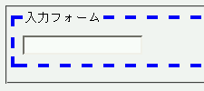
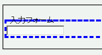

fieldset要素にdashed（破線）かdotted（点線）のボーダーを設定すると、legend要素の内容物を表示している部分にボーダーが重なって表示されてしまう。
<form action="#"> <fieldset style="border:4px dashed blue;"> <legend>入力フォーム</legend> <input type="text" name="i1"> </fieldset> </form>
fieldset要素に破線ボーダーを設定しています。
Moz1.0での表示（標準モード）
WinIE6.0での表示（標準モード）
WinIE6.0では標準・互換モード問わずバグが発生しています。